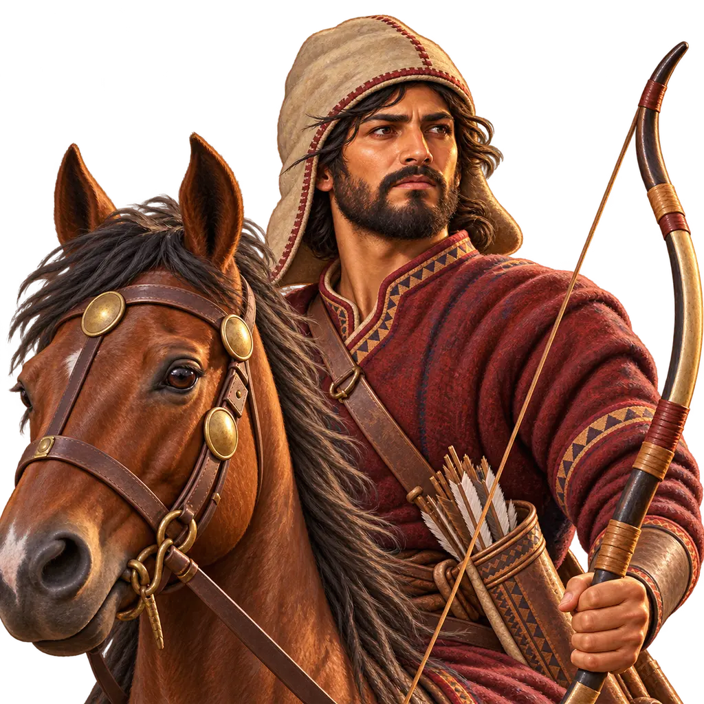
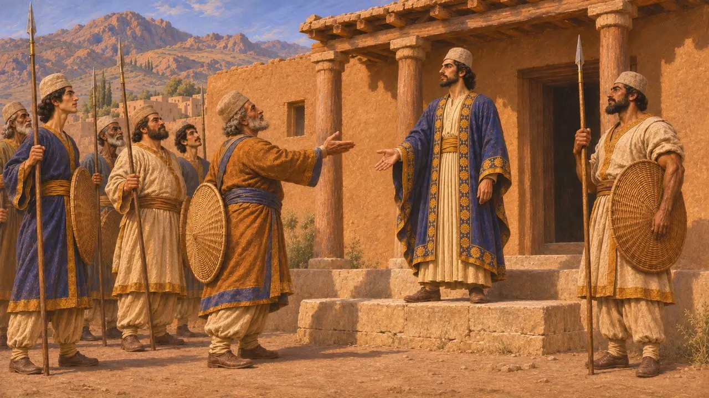
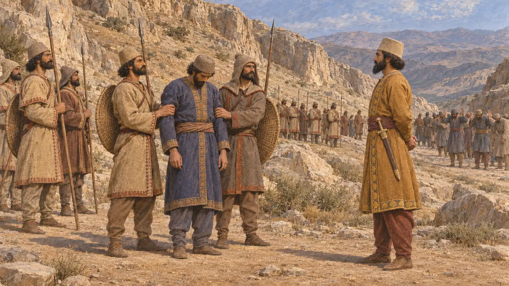
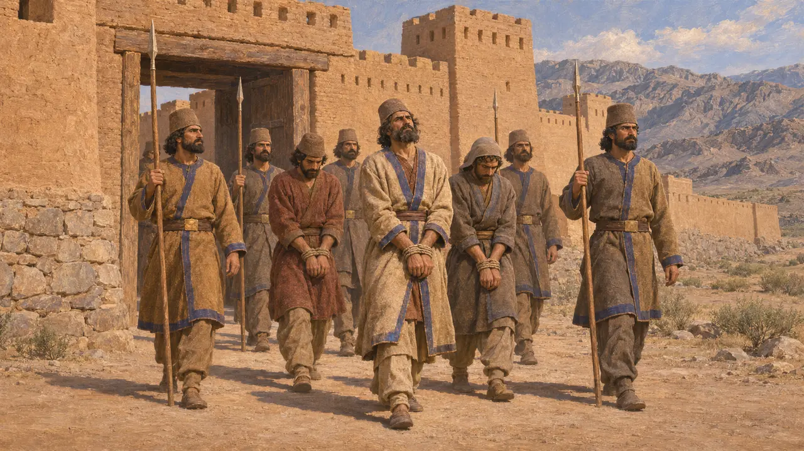
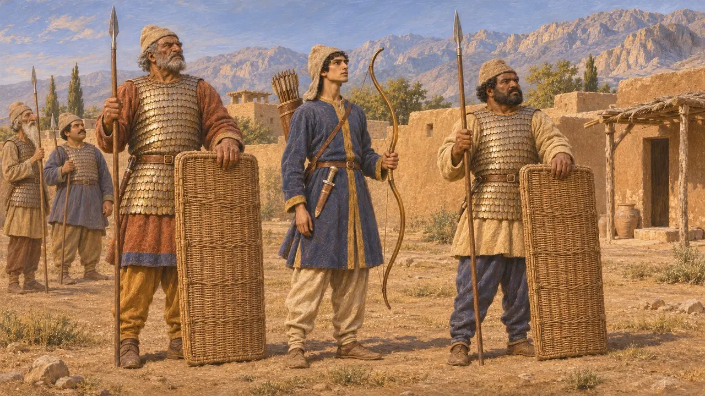
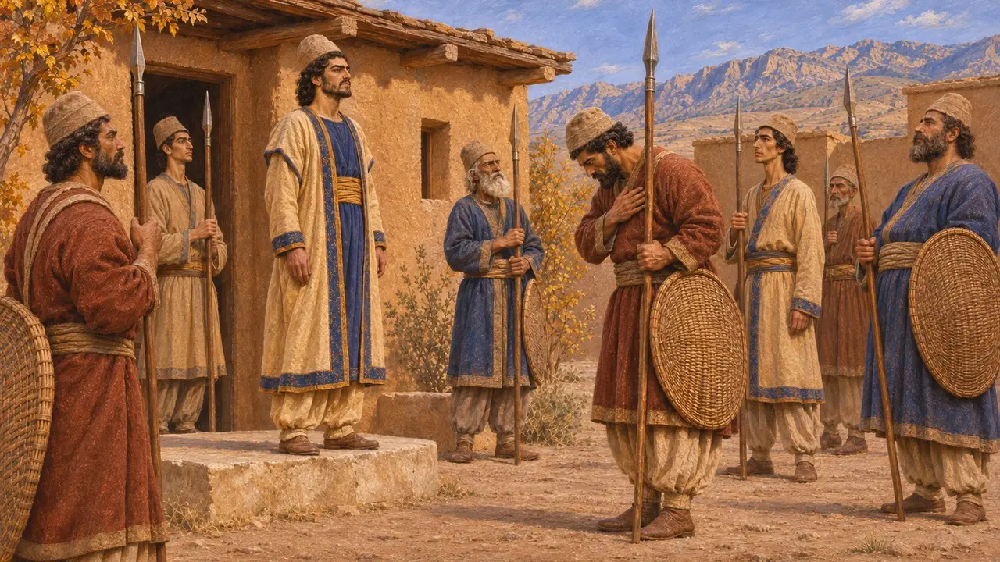

Ansiklopedi › Askerler ve gemiler

Vahyazdata'nın asileri
Dareios'a karşı ikinci bir sahte Bardiya'nın ardından giden Pers askerleri, Persis, MÖ 521
Oyunda: Bölüm 4: Teras
MÖ 521'de Dareios Medya ve Babilonya'da asilerle savaşırken, Vahyazdata adlı bir Pers kendini Kyros'un oğlu Bardiya olarak tanıttı ve Persis'te kral kabul edildi. Pers ordusunun bir kısmı onun safına geçti. İsyan önemliydi, çünkü Perslerin kendi yurdunda, Dareios'un elinde tutmaya en çok ihtiyaç duyduğu halkın arasında patlak vermişti.
Oyunda: Parsa bölümünde Vahyazdata'nın asileri Kralın örgü kalkanını taşır, oklara ve atlılara karşı dayanıklıdır; onlara atlı okçular ve bir yiğit katılır. Yiğit uydurmadır; gerçek savaşlar Parsa'da değil, Raha'da ve Parga Dağı'nda yapıldı.

Anayurtta bir Pers ayaklanması
BelgelerdeDareios'un Behistun yazıtına göre Vahyazdata, Persis'teki Yautiya bölgesinde Tarava adlı bir kasabada yaşıyordu. Kendini Kyros'un oğlu Bardiya ilan etti. Yazıt, sarayda konuşlanmış Pers birliklerinin Dareios'tan yüz çevirip Vahyazdata'ya katıldığını, böylece onun Persis'te kral olduğunu da ekler.
DB §40

Raha'da ve Parga Dağı'nda yenilgi
BelgelerdeDareios, Artavardiya adlı bir Persin komutasında Pers ve Med birlikleri gönderirken geri kalanları kendisi Medya'ya götürdü. Artavardiya asileri Persis'teki Raha'da yendi. Vahyazdata birkaç atlıyla Paişiyauvada'ya kaçtı, yeni bir kuvvet topladı ve Parga Dağı'nda yeniden savaştı; orada yenildi ve yakalandı. Dareios onu ve önde gelen yandaşlarını Persis'teki Uvadaiçaya'da kazığa geçirtti.
DB §41-43

Arakhosia'da ikinci bir cephe
BelgelerdeVahyazdata ayrıca doğuya, Dareios'un Arakhosia satrabı Vivana'ya karşı bir ordu gönderdi. Yazıt, Vivana'nın bu orduyu Kapişakaniş kalesi yakınında ve ardından Gandutava bölgesinde yendiğini kaydeder. Asi ordusunun komutanı kaçtı; Arşada kalesinde adamlarıyla birlikte yakalanıp öldürüldü. Vahyazdata'nın figürü, Behistun kabartmasındaki bağlı asiler arasında, kısa bir yazıtla adı belirtilerek yer alır.
DB §45-48; DBh

Asiler nasıl silahlanmıştı
TartışmalıAsilerin teçhizatını anlatan hiçbir kaynak yoktur. Birçoğu daha önce Pers kraliyet askeri olduğundan, tarihçiler onların da öteki Persler gibi savaştığını varsayar. Herodotos, Pers piyadesini keçe başlıklar, pullu zırhlar, örgü kalkanlar, kısa mızraklar, büyük yaylar ve hançerlerle betimler. Bu betimleme onun Kserkses'in MÖ 480 yılındaki ordusuna ilişkin anlatımından gelir; dolayısıyla bunu MÖ 521'deki bu adamlara uygulamak kayda dayalı bir bilgi değil, makul bir tahmindir.
Herodotus 7.61

Sahtekâr mı, rakip hak iddiacısı mı
TartışmalıDareios'un anlatısı her asiyi yalancı diye niteler ve Vahyazdata, onun sahte Bardiya olarak andığı ikinci kişidir. Herodotos ondan hiç söz etmez. Bazı tarihçiler gerçek Bardiya'nın Dareios ve müttefiklerince öldürüldüğünden, Vahyazdata'ya verilen desteğin de Perslerin Kyros soyuna bağlılığını yansıttığından şüphelenir. Kimileri ise Dareios'un anlattıklarını kabul eder. Günümüze yalnızca kazananın anlatısı ulaşmıştır.
P. Briant, From Cyrus to Alexander, 2002
Kaynaklar
- Darius, Behistun inscription, DB §40-48 and DBh
- R. Schmitt, The Bisitun Inscriptions of Darius the Great: Old Persian Text, 1991
- A. Kuhrt, The Persian Empire: A Corpus of Sources from the Achaemenid Period, 2007
- P. Briant, From Cyrus to Alexander, 2002
- Herodotus 7.61